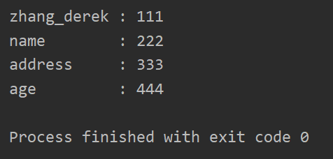

#2.1.如何拆分含有多种分隔符的字符串
s = 'ab;cd|efg|hi,jkl|mn\topq;rst,uvw\txyz'
#第一种方法
def my__split(s, seps):
res = [s]
for sep in seps:
t = []
list(map(lambda ss: t.extend(ss.split(sep)), res))
res = t
return res
s1 = my__split(s, ',;|\t')
print(s1) #['ab', 'cd', 'efg', 'hi', 'jkl', 'mn', 'opq', 'rst', 'uvw', 'xyz']
#第二种方式：使用re.split (推荐)
import re
s2 = re.split('[,;|\t]+', s)
print(s2) #['ab', 'cd', 'efg', 'hi', 'jkl', 'mn', 'opq', 'rst', 'uvw', 'xyz']#2.2.如何调整字符串中文本的格式
import re
#调整时间显示的格式
s = "2019-08-15 23:23:12"
s1 = re.sub(r'(\d{4})-(\d{2})-(\d{2})',r'\2/\3/\1',s)
print(s1) # 08/15/2019 23:23:12# 2.3如何将多个小字符串拼接成一个大的字符串..
l = ["<11>","<22>","<33>","<44>","<55>","<66>","<77>"]
#第一种方法,空间和时间都比较浪费
s = ''
for x in l:
s += x
print(s) #<11><22><33><44><55><66><77>
#第二种方法
s2 = ''.join(l)
print(s2) #<11><22><33><44><55><66><77>In [17]: s = 'abc'
In [18]: s.ljust(10)
Out[18]: 'abc '
In [19]: s.ljust(10,'*')
Out[19]: 'abc*******'
In [20]: s.rjust(10)
Out[20]: ' abc'
In [21]: s.rjust(10,'*')
Out[21]: '*******abc'
In [22]: s.center(10)
Out[22]: ' abc '
In [23]: s.center(10,'*')
Out[23]: '***abc****'
In [24]:把字典以左对齐的形式打印出来
#2.4如何对字符串进行左, 右, 居中对齐
d = {
"zhang_derek": "111",
'name':'222',
'address':'333',
'age':'444'
}
w = max(map(len,d.keys())) #计算所有key中字符最长的是多少
print(w) #11
for k, v in d.items():
print(k.ljust(w), ":", v)结果

(1)用strip()函数，只能取出两端的，中间的许可以去掉
In [30]: s = ' zhang_derek '
In [31]: s.strip()
Out[31]: 'zhang_derek'
In [32]: s.lstrip()
Out[32]: 'zhang_derek '
In [33]: s.rstrip()
Out[33]: ' zhang_derek'
In [34]:加参数
In [43]: s1 = ' -=+zhang_derek-=-+ '
In [44]: s1.strip()
Out[44]: '-=+zhang_derek-=-+'
In [45]: s1.strip('-=+ ')
Out[45]: 'zhang_derek'
In [46]:(2)删除固定位置，用切片，去掉下面的冒号
In [46]: s2 = 'abc:123'
In [47]: s2[:3] + s2[4:]
Out[47]: 'abc123'
In [48]:(3)replace
In [48]: s3 = ' abc 123 '
In [49]: s3.strip()
Out[49]: 'abc 123'
In [50]: s3.replace(' ','')
Out[50]: 'abc123'
In [51]:(4)正则表达式re.sub()
In [57]: s4 = ' \t abc \t 123 \n '
In [58]: import re
In [59]: re.sub('[ \t\n]+', '', s4)
Out[59]: 'abc123'
In [60]: